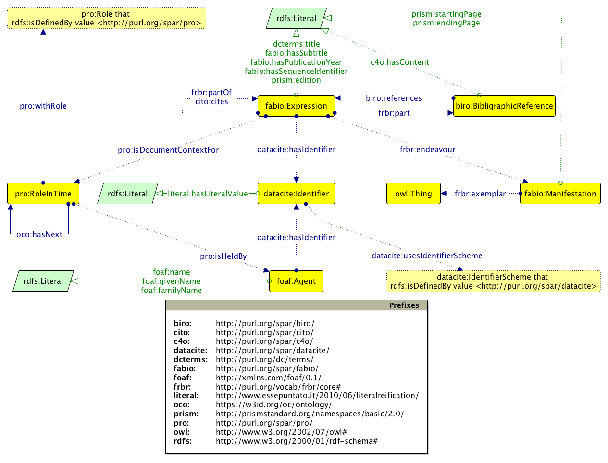

In this demo paper we introduce SPACIN, one of the main tools used in the OpenCitations Project for producing RDF-based citation data from information available in trusty sources, such as Europe PubMed Central, Crossref, and ORCID.
The OpenCitations Project (http://opencitations.net) has recently created a new instantiation of its citation database, with an integrated SPARQL endpoint and a browsing interface to support data consumers . This database, the OpenCitations Corpus (OCC), is an open repository of scholarly citation data made available under a Creative Commons public domain dedication (CC0), which provides accurate bibliographic references harvested from the scholarly literature, that others may freely build upon, enhance and reuse for any purpose, without restriction under copyright or database law – e.g. Wikidata has already started to use OCC for enriching the description of scholarly papers. The OCC is evolving dynamically in time, since new articles are continuously gathered (and then processed), and it enables the creation of incoming and outgoing links easily by means of the format used to store all the data, i.e. RDF.
In this demo paper we introduce the SPAR Citation Indexer, or SPACIN, which is the primary mechanisms used in OpenCitations for producing all the data included in the OCC. In particular, we show which kind of input SPACIN is able to process, what kinds of RDF data it produces, and what are the ontologies SPACIN uses for describing such data. All the code of OpenCitations, including SPACIN, is released with an ISC license and, thus, can be freely reused in different context and according to different purposes.
The SPAR Citation Indexer, a.k.a. SPACIN, is a script and a series of Python classes that allow one to process particular JSON files containing the bibliographic reference lists of papers, produced by another script included in the OpenCitations GitHub repository that retrieves such lists by querying the Europe PubMed Central API. An excerpt of an input JSON file used by SPACIN is introduced as follows:
{
"localid": "MED-27193261", "doi": "10.1038/ncomms11627",
"curator": "BEE EuropeanPubMedCentralProcessor",
"source_provider": "Europe PubMed Central",
"source": "http://www.ebi.ac.uk/europepmc/webservices/rest/PMC4874038/fullTextXML",
"references": [ {
"bibentry": "Weaver C. T, Elson C. O, Fouser L. A. & Kolls J. K. The Th17 pathway and inflammatory diseases of the intestines, lungs, and skin. Annu. Rev. Pathol. 8, 477\u2013512 (2013). PMID: 23157335",
"doi": "10.1146/annurev-pathol-011110-130318", … }, … ], …
}
SPACIN processes such JSON files and retrieves additional metadata information about all the citing/cited articles by querying the Crossref API and the ORCID API. These API are also used to disambiguate bibliographic resources and agents by means of the identifiers retrieved (e.g., DOI, ISSN, ISBN, ORCID, URL, and Crossref member URL). Once SPACIN has retrieved all these metadata, RDF resources are created (or reused, if they have been already added in the past) and stored in the file system in JSON-LD format. In addition, they are also uploaded to the triplestore (via SPARQL UPDATE protocol) specified by the variable triplestore_url in the file conf_spacin.py.
SPACIN stores all the metadata relevant to bibliographic entities by using the OCC metadata model summarised in . The ontological terms of such metadata model are collected within an ontology called the OpenCitations Ontology (OCO), which includes several terms from the SPAR Ontologies and other vocabularies. In particular, the following six bibliographic entity types occur in the datasets created by SPACIN:
bibliographic resources (br), class fabio:Expression – resources that either cite or are cited by other bibliographic resources (e.g. journal articles), or that contain such citing/cited resources (e.g. journals);
resource embodiments (re), class fabio:Manifestation – details of the physical or digital forms in which the bibliographic resources are made available by their publishers;
bibliographic entries (be), class biro:BibliographicReference – literal textual bibliographic entries occurring in the reference lists of bibliographic resources;
responsible agents (ra), class foaf:Agent – names of agents having certain roles with respect to the bibliographic resources (i.e. names of authors, editors, publishers, etc.);
agent roles (ar), class pro:RoleInTime – roles held by agents with respect to the bibliographic resources (e.g. author, editor, publisher);
identifiers (id) (class datacite:Identifier) – external identifiers (e.g. DOI, ORCID, PubMedID) associated to bibliographic resources and agents.

Upon initial curation by SPACIN, a URL is assigned to each entity, according to the following schema:
[corpus URL] + [sub-dataset ID] + / + [entity ID]
The corpus URL (which is https://w3id.org/oc/corpus/ for the OCC) identifies the entire dataset one is creating. It is possible to set it up by modifying the variable base_iri specified in the conf_spacin.py file in the GitHub repository. The sub-dataset ID is the two-letter short name for the class of items we are taking into consideration (e.g. br
for bibliographic references), while the entity ID is a number that identifies a particular item that is unique among resources of the same type. For instance, the entity https://w3id.org/oc/corpus/br/525205 in the OCC identifies the 525,205th bibliographic resource stored by SPACIN – where the two-letter short name for the class of items plus /
plus the number (br/525205
in the example) is called corpus identifier, since it allows the unique identification of any entity within the dataset one is building by means of SPACIN.
Each of the entities created by SPACIN is associated with metadata describing its provenance using the PROV-O ontology and its PROV-DC extension (e.g. https://w3id.org/oc/corpus/br/525205/prov/se/1 in the OCC). In particular, SPACIN stores information about the curatorial activities related to each entity, the curatorial agents involved, and their roles.
All these RDF data are stored in BibJSON encoded as JSON-LD, defined through an appropriate JSON-LD context which hides the complexity of the model (shown in ) behind natural language keywords. For instance, the following excerpt is the JSON-LD linearisation of the aforementioned “br/525205” entity:
{
"iri": "gbr:525205", "a": [ "article", "document" ],
"label": "bibliographic resource 525205 [br/525205]",
"title": "The Electronic Patient Reported Outcome Tool: Testing Usability and Feasibility of a Mobile App and Portal to Support Care for Patients With Complex Chronic Disease and Disability in Primary Care Settings",
"year": "2016", "part_of": "gbr:476045", "format": "gre:217773",
"reference": [ "gbe:727463", "gbe:727473", … ],
"citation": [ "gbr:1095446", "gbr:525190", … ],
"contributor": [ "gar:1591192", "gar:1591193", … ],
"identifier": [ "gid:816999", "gid:816997", … ]
}
In this excerpt, iri
defines the URL of the resource in consideration (where gbr:
is a prefix for https://w3id.org/oc/corpus/br/), while a, label, title, year, part_of, reference, citation, format, contributor, and identifier stand for rdf:type, rdfs:label, dcterms:title, fabio:hasPublicationYear, frbr:partOf, biro:references, cito:cites, frbr:embodiment, c4o:isDocumentContextFor, and datacite:hasIdentifier respectively (where gbe:
is a prefix for https://w3id.org/oc/corpus/be/, gre:
for https://w3id.org/oc/corpus/re/, and gid:
for https://w3id.org/oc/corpus/id/).
Additional information about how SPACIN stores citation data, and the way they are represented in RDF, are detailed in the OCC Metadata Document .
In this paper we have introduced SPACIN, the SPAR Citation Indexer, that is a tool for creating RDF-based citation data starting from information made available by trusty sources, such as Europe PubMed Central, Crossref, and ORCID. In the future, we plan to extend SPACIN for enabling the parallel execution of multiple instances of such script, so as to increase the number of new bibliographic entities created by SPACIN each day – which currently is around 20,000 new citing/cited bibliographic resources, according to the statistics related with the OCC.
Peroni, S., Shotton, D. (2016). Metadata for the OpenCitations Corpus. Figshare. https://dx.doi.org/10.6084/m9.figshare.3443876
Peroni, S., Dutton, A., Gray, T., Shotton, D. (2015). Setting our bibliographic references free: towards open citation data. Journal of Documentation, 71 (2): 253–277. http://dx.doi.org/10.1108/JD-12-2013-0166
Peroni, S. (2014). The Semantic Publishing and Referencing Ontologies. In Semantic Web Technologies and Legal Scholarly Publishing: 121–193. http://dx.doi.org/10.1007/978-3-319-04777-5_5
Falco, R., Gangemi, A., Peroni, S., Vitali, F. (2014). Modelling OWL ontologies with Graffoo. In The Semantic Web: ESWC 2014 Satellite Events: 320–325. http://dx.doi.org/10.1007/978-3-319-11955-7_42
Peroni, S., Shotton, D., Vitali, F. (2016). Freedom for bibliographic references: OpenCitations arise. To appear in Proceedings of 2016 International Workshop on Linked Data for Information Extraction (LD4IE 2016). https://w3id.org/oc/paper/occ-lisc2016.html